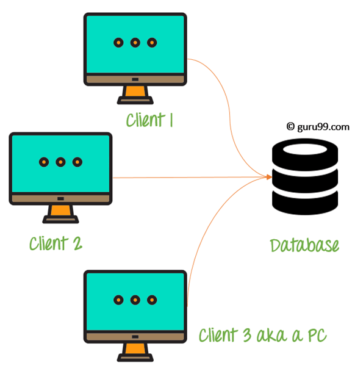
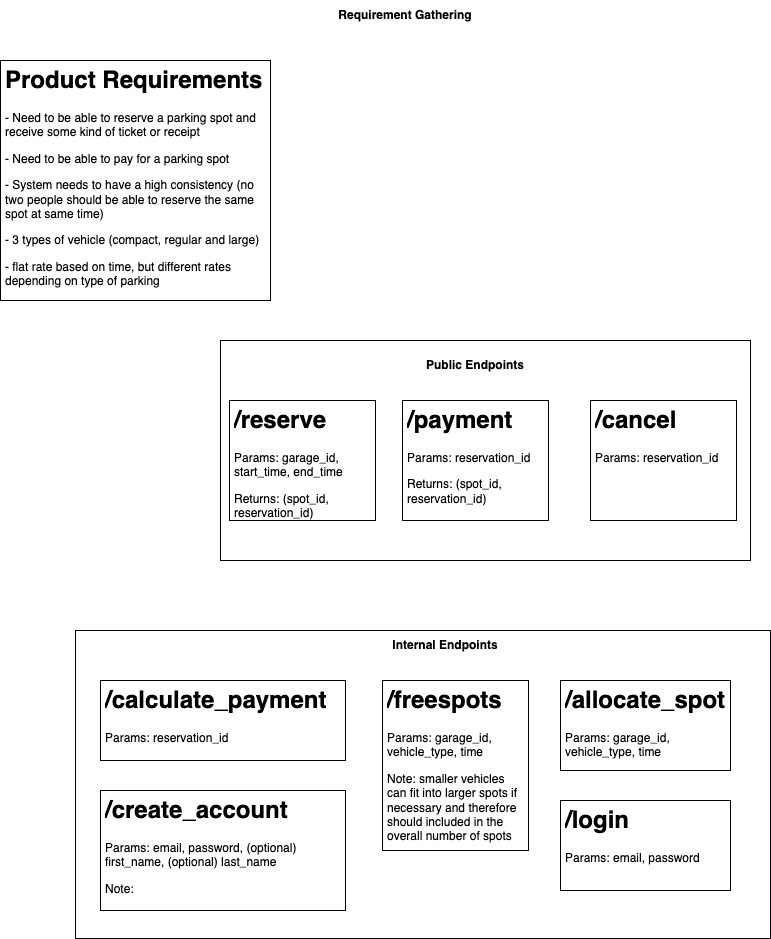
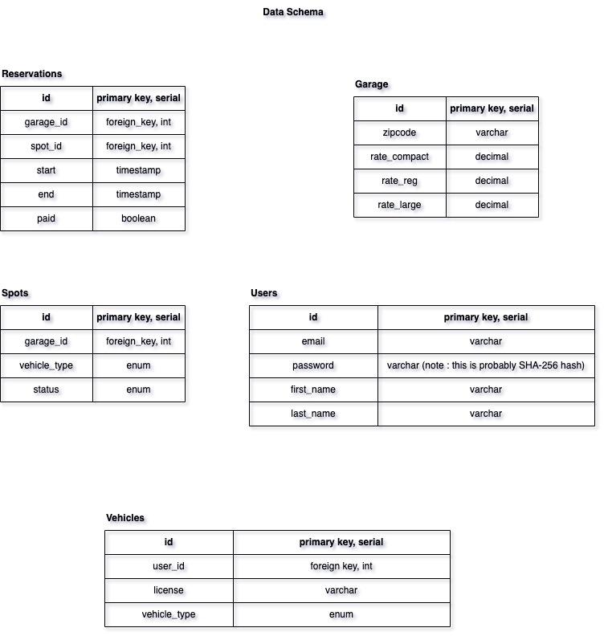
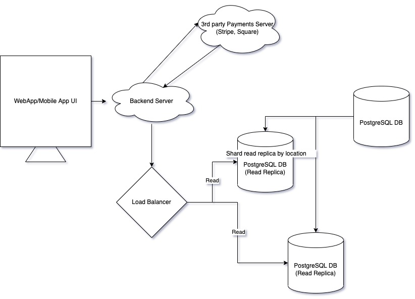

<!doctype html>
<html lang="en">
  <head>
    <meta charset="utf-8">

    <title>Fundamentals of Backend and Blockchain Development</title>

    <meta name="author" content="Dhruvin Parikh">

    <meta name="apple-mobile-web-app-capable" content="yes" />
    <meta name="apple-mobile-web-app-status-bar-style" content="black-translucent" />

    <meta name="viewport" content="width=device-width, initial-scale=1.0, maximum-scale=1.0, user-scalable=no, minimal-ui">

    <link rel="stylesheet" href="../../reveal.js/css/reveal.css">
    <link rel="stylesheet" href="../../reveal.js/css/theme/black.css" id="theme">

    <!-- Code syntax highlighting -->
    <link rel="stylesheet" href="../../reveal.js/lib/css/zenburn.css">

    <!-- Printing and PDF exports -->
    <script>
      var link = document.createElement( 'link' );
      link.rel = 'stylesheet';
      link.type = 'text/css';
      link.href = window.location.search.match( /print-pdf/gi ) ? '../../reveal.js/css/print/pdf.css' : '../../reveal.js/css/print/paper.css';
      document.getElementsByTagName( 'head' )[0].appendChild( link );
    </script>

    <!--[if lt IE 9]>
    <script src="../reveal.js/lib/js/html5shiv.js"></script>
    <![endif]-->

    <style>
      .reveal .slides h1, .reveal .slides h2, .reveal .slides h3 {
        text-transform: none;
      }

      .two-column {
        display: flex;
        flex-wrap: wrap;
      }

      .two-column em {
        margin: 20px;
      }

      .reveal .big-and-bold {
        font-weight: bold;
        font-size: 135%;
      }

      .reveal .shrunk-a-bit {
        font-size: 90%;
      }

      .reveal .shrunk-a-bit pre {
        width: 100%;
      }

      .reveal pre {
        width: 100%;
      }

      .reveal .highlight {
        color: yellow;
        font-weight: bold;
      }

      .reveal .highlightRed {
        color: red;
        font-weight: bold;
      }
    </style>
  </head>

  <body>
    <div class="reveal">
      <div class="slides">

<!------------------------------------------------------->


<section data-markdown><script type="text/template">

## CSBC 1000 - Fundamentals of Backend and Blockchain Development

### Class 1: The three-tier architecture

*Dhruvin Parikh*

</script></section>


<section data-markdown><script type="text/template">

## Class Plan
* Introduction to three-tier architecture
* Overview of :
 * Frontend development
 * Backend development
 * Full stack development
</script></section>

<section data-markdown><script type="text/template">

## Deployment Environment

* Development
* Testing
* Staging or Pre-production or UAT (user-acceptance testing)
* Production

</script></section>

<section data-markdown><script type="text/template">

## DBMS architecture

* **Single tier architecture** 
* **Two tier architecture**
* **Three tier architecture**
  * functional processes, logic, data access, data storage and UI interface done independently as separate modules
</script></section>

<section data-markdown><script type="text/template">

### Single tier architecture


* Client, server, and Database all reside on the same machine. 
* For e.g. installing a Database in your system and access it to practice SQL queries. 
* Rarely used in "production".

</script></section>


<section data-markdown><script type="text/template">

### Two tier architecture


* Server and database reside on same machine
* Presentation layer runs on a client (PC, Mobile, etc.) 
* Data is stored on a server called the second tier. 
* It also provides direct and faster communication.
* E.g. Contact Management system using MS-Access

</script></section>


<section data-markdown><script type="text/template">

## Three tier architecture


* Development and maintenance of functional processes, logic, data access, data storage, and user interface is done independently as separate modules. 
* Contains a presentation layer, an application layer, and a database server.

</script></section>

<section data-markdown><script type="text/template">

## Goal of three tier architecture

* Segregate user applications and physical database
* Program-data independence
* Support multiple views of Data

</script></section>


<section data-markdown><script type="text/template">

## Layers of 3 tier architecture

* **Presentation layer**
  * HTML, JavaScript, CSS, Javascript(React JS)
* **Application layer**
  * Java, .NET, C#, Python, C++, Javascript (Node JS)
* **Database server**
  * MySQL, PostgreSQL, SQL Server, MongoDB, LevelDB, CouchDB

</script></section>


<section data-markdown><script type="text/template">

## Presentation layer

* Consists of web-based user interface displaying content useful to end user
* Web-based application mostly build with Php, HTML, JavaScript and CSS based frameworks like React, Next, Vue, Nuxt, etc
* Mobile based application mostly build with Swift, Android, React native, ionic, Xamarin, Objective C etc

</script></section>
  
  
<section data-markdown><script type="text/template">

## Application layer

* Enables communication between end-user and DBMS as well as reverse.
* The application layer(business logic layer) also processes functional logic, constraint, and rules before passing data to the user or down to the DBMS.
* Contains application's business logic to drive application's core capabilities
* Mostly build using NodeJS, Java, .NET, C#, Python, C++ etc

</script></section>


<section data-markdown><script type="text/template">
  
## Data layer

* Contains database/data storage system and data access layer.
* Mostly spun up using MySQL, PostgreSQL, MongoDB, etc
* The application layer accesses data via API calls.
* Useful for scaling the system
  
</script></section>

<section data-markdown><script type="text/template">

## Sample Data 
* Insight for e-commerce store's customer location 
<pre class="hljs js">
    <span class="highlight">id, first_name, last_name, email, city</span>
    1, Rufe, Loynes, rloynes0@imgur.com, Nanchangshan
    2, Elfie, Daines, edaines1@com.com, Bromolla
    3, Steven, Philpault, sphilpault2@nps.gov, Russkiy
    4, Bibby, Leyban, bleyban3@weebly.com, Gul'cha
    5, Sheena, Cochet, scochet4@vimeo.com, Begles
    6, Heriberto, Neasam, hneasam5@soup.io, Watergrasshill
    7, Brett, Spellessy, bspellessy6@ow. ly, Villa Elisa
    8, Spencer, MacCaig, smaccaig7@xrea.com, Terek
    9, Ezekiel, Favela, efavela8@nasa.gov, Yamaguchi - shi
    10, Hersch, Geratasch, hgeratashch9@biblegateway.com, Wan'an
</pre>

</script></section>


<section data-markdown><script type="text/template">

  ## Frontend
  
  * Lies on application layer and acts as a client to backend application
  * Provides visual and interactive experience to user
  * Parses data from data layer and presents in human readable form.  
  
</script></section>


<section data-markdown><script type="text/template">

## UI/UX design
  
* Look and feel of the application
* Tools like Adobe XD, Figma, Lucid chart, Balsamiq, Sketch etc are used for wire framing and simulation
  
</script></section>


<section data-markdown><script type="text/template">

## UI/UX wire-frames

* A wireframe is generally a monochromatic drawing that’s created in the design phase of "Design Thinking Process". 
* It provides a blueprint of the page structure, layout, information and functions. 
* This in turn gives a clear idea to the stakeholders about the functioning and visual representation of application UI.
* It help save time, gathering feedback and create accurate designs
  
</script></section>

<section data-markdown><script type="text/template">

## UI/UX design principles
  
* Avoid jargon and non-actionable data
* Be consistent and use a design system
* Use existing UX patterns
* Create active guidance and feedback
* Allow for and anticipate mistakes
* Focus on localization and device agnostic
  
</script></section>

<section data-markdown><script type="text/template">

## UI/UX trust signalling
  
* Give explicit control to the user
* Reduce anxiety and cognitive load. 
* Guide with consistency. 
* Respect established conventions. 
* Capture and confirm potential mistakes
* Make the complex intuitive

</script></section>

<section data-markdown><script type="text/template">

## UI/UX Key Takehomes
  
* Wireframes should be used early in a project to get user and client approval on the layout of key pages and the navigation.
* The user is the weakest link in the security chain
* The UI is the place to make them stronger
* Designers are the protectors
  
</script></section>

  
<section data-markdown><script type="text/template">

  ## Development
  
  * The wire-frames created during UI/UX design is converted into code.
  * Involves creating visual components around the screen of the device
</script></section>

<section data-markdown><script type="text/template">

  ## Client Side rendering
  
  * Initial requests load page, layout, CSS and Javascript
  * Some or all of the content isn't included
  * Instead, the JS makes anothe r request, gets a response (likely in JSON),
  and generates appropriate HTML (likely using a template library such as React)
  * For subsequent updates to the page, CSR repeats the steps it used to get initial content.

</script></section>


<section data-markdown><script type="text/template">

  ## Server side rendering (Dynamic Rendering)
  
  * Initial requests loads the page, layout, CSS, JS and **content**
  * Blank page flicker does not happen. (developers mask this problem with a loading image using CSR)
  * SEO friendly : Search engines are able to index and crawl efficiently. Content is present before you get it.
  * Works fine with text-based sites; mostly static sites
  * HTML is generated at each request; Slow page rendering comparatively

</script></section>

<section data-markdown><script type="text/template">
  
  ## 15 minute break
  
</script></section>

  
<section data-markdown><script type="text/template">
  
  ## Deployment/Publishing
  
  * Web application can be deployed on the hosted services on the internet
  * Mobile applications can be published to its corresponding digital distribution service.
  * Can host on platforms like GH pages, surge.sh, AWS amplify, Firebase hosting
  
</script></section>
  
  
<section data-markdown><script type="text/template">
  
  ## Backend
  
  * Decision on storing and computation of data
  * Requires robust planning as it takes important decisions.
  * Scalable, reliable and maintainable
  
</script></section>

<section data-markdown><script type="text/template">
  
  ## Three tier application architecture

  
  
</script></section>

<section data-markdown><script type="text/template">
  
  ## System design

  * Requirement gathering
  * High level system design
  * Design core components like API, data model
  * Identify bottle necks and scale up the system
  * The non-functional requirements of today’s large scale products demand that backend systems be scalable, reliable and maintainable. 
  * Following is the list of sequence to make BE systems scalable, reliable and maintainable 
  
</script></section>

<section data-markdown><script type="text/template">
  
  ### Sequence 1

  * Who is this system for?
  * How will this end user get access to your service?
  * How many users do you estimate will be on this service hourly, daily, annually?
  * What do the requests to the system look like?
  * What will users expect this service to output?
  * Will system be more read heavy or write intensive?
  * How fast should search results be?
  * Should user requests be handled in real time?
  * Will web traffic always be equally distributed across all locations your service will be deployed? 
  
</script></section>

<section data-markdown><script type="text/template">
  
  ### Sequence 2

  

  * Sketch high level design of main components
  
</script></section>


<section data-markdown><script type="text/template">
  
  ### Sequence 3

  * Estimate the required storage and bandwidth
  * How much data would you need to store individual records? e.g say 1 Tweet = 10KB
  * How much data is this per month for your estimated number of users?
  * How many read/write requests per second are there?
  * If a popular account shares an activity, how does this impact the number of reads?
  
</script></section>


<section data-markdown><script type="text/template">
  
  ### Sequence 4

  * Design core components like the API, data model
  * Do your use cases point you towards a relationship data model or document-based model?
  * Will you use RPC, SOAP, REST or another API model?
  * what will the API request body/parameters contain?
  * If tasks take too long, how do you store them so that their status can be later queried by a user?
  * How will service authenticate and authorize users?
  * Will any processes in your service depend on an external service?
  
</script></section>


<section data-markdown><script type="text/template">
  
  ### Sequence 5

  * What portion of the code/system takes too long?
  * Can certain tasks be broken up and handled by smaller child processes?
  * Is it possible to store static files separately and closer to your users with a CDN?
  * How do you ensure that if a server or database goes down, your service won’t go down as well?
  * Is there a way to monitor and log the behavior of your service?
  
</script></section>

<section data-markdown><script type="text/template">
  
  ## Backend development
  
  * Selecting database (SQL v/s NoSQL)
  * Application configuration
  * Code Review
  * Testing - unit, integration, system, acceptance
  * Technical debt
  * **Deployment environments**
    * Development, testing, staging, production 
  
</script></section>


<section data-markdown><script type="text/template">
  
  ## Selecting database : SQL
  
  * Relation Data Model
  * Pros:
   * Easy to use and setup. 
   * Universal, compatible with many tools.
   * Good at high-performance workloads.
   * Good at structure data.
  * Cons:
   * Time consuming to understand and design the structure of the database.
   * Can be difficult to scale
  
</script></section>

<section data-markdown><script type="text/template">
  
  ## Selecting database : NoSQL
  
  * Document Data Model
  * Pros:  
   * No investment to design model. 
   * Rapid development cycles.
   * In general faster than SQL.
   * Runs well on the cloud.
  * Cons:
   * Not suitable for interconnected data.
   * Technology still maturing.
   * Can have slower response time.
  
</script></section>


<section data-markdown><script type="text/template">
  
  ## Application configuration
  
  * The port to run the software on
  * The authentication tokens to access other software
  * The location of keys and trusted certificates (to validate client requests)
  * The URL to access the database
  * Environment variables
  
</script></section>


<section data-markdown><script type="text/template">
  
  ## Code Review
  
  * The purpose of setting up a code review system on a team is to ensure that the agreed quality standards are met. 
  * It also ensures that existing features are not broken and new bugs are not introduced. 
  * This process is manual. 
  
</script></section>


<section data-markdown><script type="text/template">
  
  ## Technical debt
  
  * Abrupt introduction of requirements leads developers to decide between getting the task done quickly with low quality or to maintain a high quality and possibly miss the deadline. 
  * The cost of taking the easier path, which would need to be repaid in the future, is called technical debt.
  
</script></section>


<section data-markdown><script type="text/template">
  
  ## Deployment Environments
  
  * **Development**
   * Dev team's feature preview and collaboration
  * Testing
   * Used by project team for acceptance testing with test data
  * Staging
   * Pre-production used for final acceptance based on production size data set
  * Production
   * Used by clients (live), Full production data
  
</script></section>

<section data-markdown><script type="text/template">
  
  ## Unit testing
  
  * Testing individual function in isolation
  * Enable stable releases in software development
  
</script></section>

<section data-markdown><script type="text/template">
  
  ## Integration testing
  
  * Covers the interaction between different parts of the application.
  * Checks if different units of the software work together correctly in real life. 
  
</script></section>


<section data-markdown><script type="text/template">
  
  ## System testing
  
  * Checks that all components are integrated and work correctly
  * Verifies that system meets functional, technical and business requirements
  * It is crucial to create an environment similar to production
  
</script></section>

<section data-markdown><script type="text/template">
  
  ## Acceptance testing
  
  * QA team tests the quality of application by applying predefined test scenarios and test cases
  * Evaluate system's compliance with business requirements 
  
</script></section>

<section data-markdown><script type="text/template">
  
  ## Popular tech stacks
  
  * LAMP stack - Linux Apache MySQL PHP
  * MEAN stack - MongoDB Express Angular Node
  * MERN stack - MongoDB Express React Node
  * JAM stack - Javascript API Markup
  
</script></section>

<section data-markdown><script type="text/template">
  
  
  
  
</script></section>


<section data-markdown><script type="text/template">
  
  
  
</script></section>


<section data-markdown><script type="text/template">
  
  
  
</script></section>

<section data-markdown><script type="text/template">

  ### Discussion(1/2)
  
  * VP(logistics) of Farma, a pharmaceutical company thinks that data sharing among its supply chain would definitely help to solve its supply chain problems, especially forecasting for its suppliers. The suppliers have access to the consumer data in real-time from Farma, as they can forecast and produce much more efficiently. 

</script></section>

<section data-markdown><script type="text/template">

### Discussion(2/2)
  
* Farma’s IT director thinks Blockchain can be used for the supply chain data sharing. Hence, Farma wants a blockchain network and wants to put all the suppliers as nodes so that the data is decentralized and shared among the participants instantly.

  * Do you think this is a good idea? 
  * What are the pros and cons?
  * If blockchain is feasible for this usecase, what type of blockchain can be used ?Public or Private?Why?

</script></section>

<section data-markdown><script type="text/template">

  * Q&A
  * *THINK* exercises
  * Module 1: Three tier Architecture Quiz 
  
</script></section>


<section data-markdown><script type="text/template">

## References
* [DBMS Architecture](https://www.guru99.com/dbms-architecture.html)
* [Wireframing in UI/UX Design](https://medium.com/detaux/what-is-ui-ux-wireframe-designerrs-46dac9c8a153)
* [Diff - UI and UX](https://designerrs.com/why-do-people-confuse-ui-with-ux/)
* [CSR & SSR](https://www.youtube.com/watch?v=Y2spCNZDt84)
* [Web server](https://www.techtarget.com/whatis/definition/Web-server)
* [FE, BE and Web server](https://citykittydesign.com/app-architecture-understanding-frontend-backend-and-web-servers/)
* [WhatsApp System design](https://youtu.be/vvhC64hQZMk)
* [Automation testing](https://yalantis.com/blog/unit-testing-for-web-software/)
* [High level design](https://github.com/donnemartin/system-design-primer/tree/master/solutions/system_design/social_graph#step-2-create-a-high-level-design)
* [SD Interview](https://youtu.be/NtMvNh0WFVM)
* [NFR](https://www.scaledagileframework.com/nonfunctional-requirements/)

</script></section>

<section data-markdown><script type="text/template">

## End of Class

</script></section>


<!------------------------------------------------------->


      </div>

    </div>

    <script src="../../reveal.js/lib/js/head.min.js"></script>
    <script src="../../reveal.js/js/reveal.js"></script>
    <script src="../../reveal.js/plugin/zoom-js/zoom.js"></script>

    <script>

      // Full list of configuration options available at:
      // https://github.com/hakimel/reveal.js#configuration
      Reveal.initialize({
        controls: true,
        progress: true,
        history: true,
        center: true,

        transition: 'none', // none/fade/slide/convex/concave/zoom

	math: {
          mathjax: '../lib/MathJax/MathJax.js',
          config: 'TeX-AMS_SVG-full',
	},

        // Optional reveal.js plugins
        dependencies: [
          { src: '../../reveal.js/plugin/markdown/marked.js', condition: function() { return !!document.querySelector( '[data-markdown]' ); } },
          { src: '../../reveal.js/plugin/markdown/markdown.js', condition: function() { return !!document.querySelector( '[data-markdown]' ); } },
          { src: '../../reveal.js/plugin/highlight/highlight.js', async: true, callback: function() { hljs.initHighlightingOnLoad(); } },
          { src: '../../reveal.js/plugin/math/math.js', async: true }
        ]
      });

    </script>

  </body>
</html>